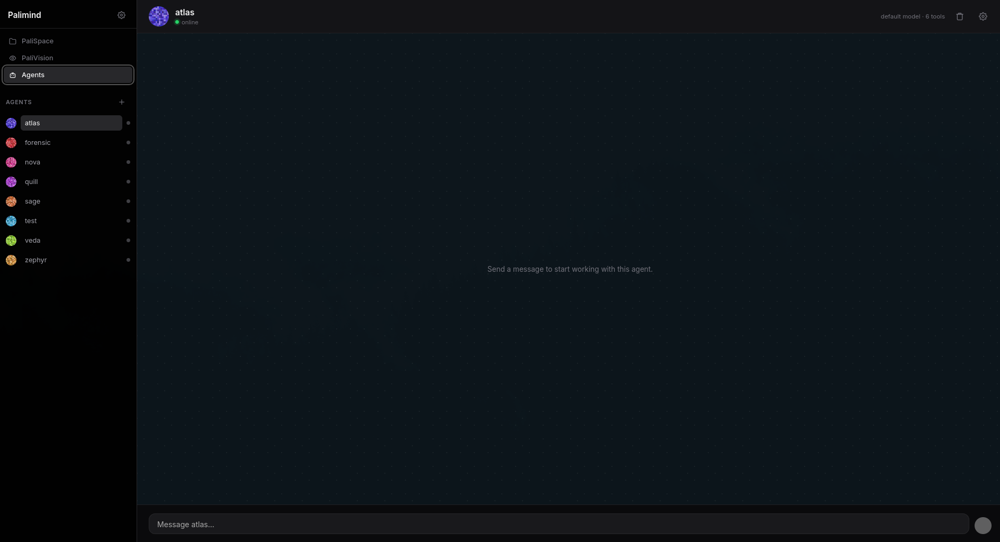

PalIAgents · 02
Agent System
A runtime for creating and running specialized agents that call tools to complete tasks —
run manually, invoked from chat with @mention, or scheduled.

Capabilities
- 10+ built-in tools — shell, Python, web browse & search, arxiv, RSS, CSV, SQLite, knowledge graph and MQTT.
- Agent memory — per-agent memory, run history and chat logs.
- Scheduler — cron-style scheduled agent runs.
- Audited — every tool call is audited and debug-traced by default.
- Sandboxed execution — timeouts and memory caps for shell and Python tools.
- Chat integration — invoke agents inline from conversation with
@mentionsyntax.